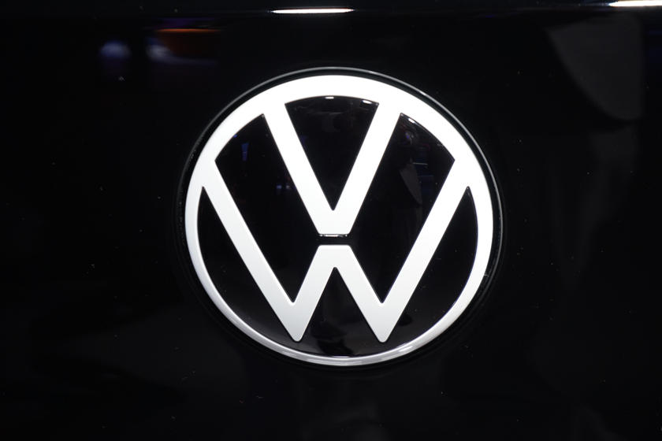
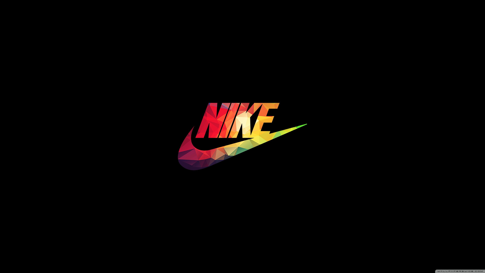
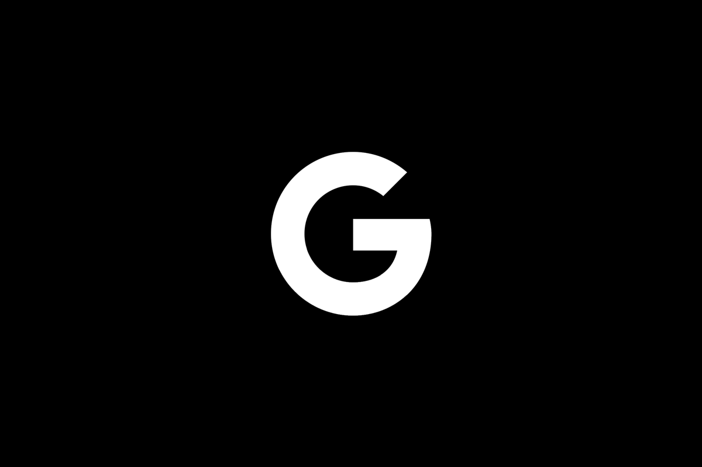
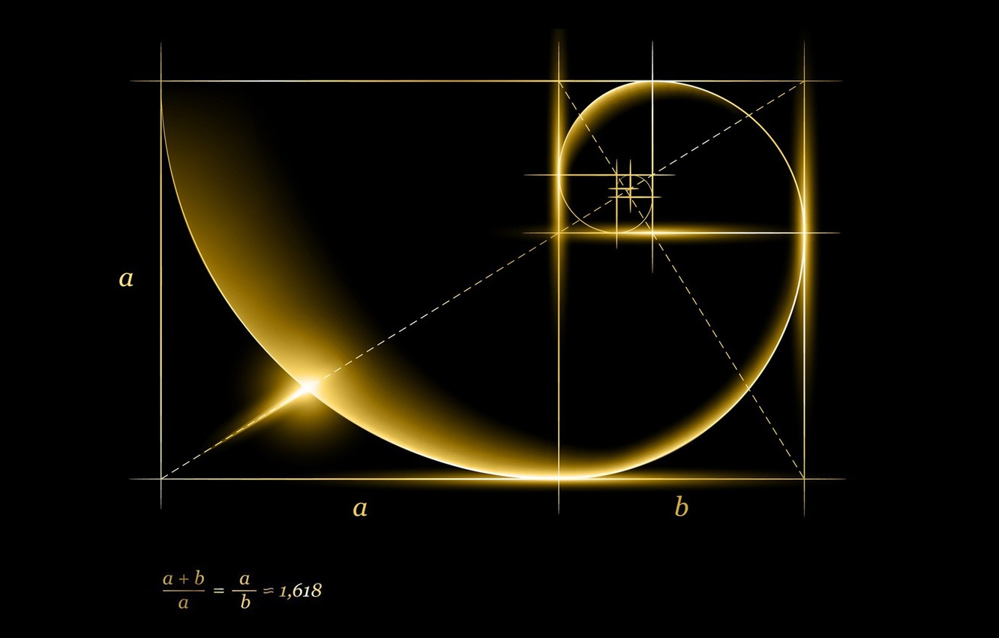

GO BACK





Apple
Apple, probably the most premium brand in the market, known for their innovation and success can be given credit for the use of the Golden Ratio in their logo. Initially an image of Newton stting under a tree depicting his most famous theory of Gravity, Jobs and Wozniak soon changed their logo to the image of an apple in the Golden Proportion. Maybe that was the secret to beating IBM at their own game at that time? Well...
Apple, probably the most premium brand in the market, known for their innovation and success can be given credit for the use of the Golden Ratio in their logo. Initially an image of Newton stting under a tree depicting his most famous theory of Gravity, Jobs and Wozniak soon changed their logo to the image of an apple in the Golden Proportion. Maybe that was the secret to beating IBM at their own game at that time? Well...
Volkswagen
The automobile giant is no further behind in the game of the logos. The logo was the result of a logo designing competition at their office in the 20s. The winner was an engineer named "Franz Reimspiess," the same person who gave the design of the legendary Volkswagen Beetle. He received 50 marks for his effort, the highest in the competition. Franz's career
skyrocketed as an engineer after this, designing
various classic cars. Coincidence? I think not.
The automobile giant is no further behind in the game of the logos. The logo was the result of a logo designing competition at their office in the 20s. The winner was an engineer named "Franz Reimspiess," the same person who gave the design of the legendary Volkswagen Beetle. He received 50 marks for his effort, the highest in the competition. Franz's career
skyrocketed as an engineer after this, designing
various classic cars. Coincidence? I think not.
Nike
Nike is a staunch believer in visual harmony through mathematics. Their global trademark logo is a simple, yet powerful one. With multiple instances of the Fibonacci circle and the Golden Proportion in them, the logo has been taken as a case study at various prestigious universities for design. It has been the aim of many designers to come up with such a simple, yet visually appealing logo, but none have been as successful.
Nike is a staunch believer in visual harmony through mathematics. Their global trademark logo is a simple, yet powerful one. With multiple instances of the Fibonacci circle and the Golden Proportion in them, the logo has been taken as a case study at various prestigious universities for design. It has been the aim of many designers to come up with such a simple, yet visually appealing logo, but none have been as successful.
Google
Their products attract, their websites attract, and their logos attract. The "Re-imagined" (as they called it) logo of the company found harmony in the Golden Ratio, just as it's successor did. The company designs almost every one of their products in the "Divine Proportion," including the image of their microphone. With attention to detail in almost every pixel of their logo, the internet giant has become, literally, a virtual gravity.
Their products attract, their websites attract, and their logos attract. The "Re-imagined" (as they called it) logo of the company found harmony in the Golden Ratio, just as it's successor did. The company designs almost every one of their products in the "Divine Proportion," including the image of their microphone. With attention to detail in almost every pixel of their logo, the internet giant has become, literally, a virtual gravity.
Other Companies
Other major companies, like Nissan, Twitter (under Facebook), Toyota and BP have consciously employed the Golden Proportion in their logos too. Having become big, household brand-names, other companies looking to emulate them have starting fitting their logos in the Golden Ratio too. Despite few studies debunking it and calling it a myth, it continues to be employed actively in designs, with a rising number of studies proving critics wrong with hard, undeniable mathematics.
Other major companies, like Nissan, Twitter (under Facebook), Toyota and BP have consciously employed the Golden Proportion in their logos too. Having become big, household brand-names, other companies looking to emulate them have starting fitting their logos in the Golden Ratio too. Despite few studies debunking it and calling it a myth, it continues to be employed actively in designs, with a rising number of studies proving critics wrong with hard, undeniable mathematics.